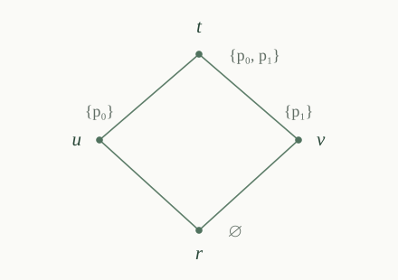

Use the shared native propositional formulas on numbered atoms \(p_0,p_1,\ldots\). The Dummett instance on formulas \(A,B\) is
The linearity schema is \(\mathcal L=\{\mathsf L(A,B):A,B\text{ are formulas}\}\). It includes every compound-formula instance, with the disjunction retained inside each formula. Formula substitution commutes with the displayed connectives, so \(\mathsf L(A,B)[\sigma]=\mathsf L(A[\sigma],B[\sigma])\).
Write \(\Gamma\vdash_{\mathcal L}C\) for the existing consequence relation with finitely many added axioms: some finite \(E\subseteq\mathcal L\) gives an ordinary intuitionistic deduction \(\Gamma\cup E\vdash_{\mathrm I}C\). This extension is called LC, or Gödel–Dummett logic. The allowed premise set \(\Gamma\) may be infinite; each deduction and its added support are finite.
For a nonempty preordered frame \((W,\leq)\), the future cone at \(w\) is linearly ordered when
Call the frame locally linear when this holds at every world. The word “ordered” here permits a preorder: distinct mutually accessible worlds are allowed. We are asking for comparability of futures with a common predecessor, rather than comparability of every two unrelated worlds in the whole frame.
As before, frame validity quantifies over every persistent valuation and every world. Truth in just one fixed model is a different condition.
If the cone above \(w\) is linearly ordered, then in every model on that frame, \(w\Vdash\mathsf L(A,B)\) for all formulas \(A,B\).
Reason classically about the model. If \(w\Vdash A\to B\), its left disjunct gives the result. Otherwise the implication clause supplies \(u\geq w\) such that \(u\Vdash A\) and \(u\nVdash B\). We prove \(w\Vdash B\to A\).
Take any \(v\geq w\) with \(v\Vdash B\). If \(u\leq v\), persistence carries \(A\) from \(u\) to \(v\). If \(v\leq u\), persistence would carry \(B\) from \(v\) to \(u\), contradicting its chosen failure there. Comparability supplies these two cases, so every requested future forcing \(B\) forces \(A\). This gives the right disjunct. The case distinction is reasoning about models; it adds no excluded-middle inference to the object calculus.
Suppose \(u,v\geq w\), but neither \(u\leq v\) nor \(v\leq u\). On this exact frame, the persistent valuation
with every other atom false makes \(w\nVdash\mathsf L(p_0,p_1)\).
Transitivity makes both upward-cone valuations persistent. At \(u\), the atom \(p_0\) holds by reflexivity, but \(p_1\) fails because \(v\nleq u\). Thus the future \(u\) witnesses failure of \(p_0\to p_1\) at \(w\). At \(v\), the atom \(p_1\) holds and \(p_0\) fails because \(u\nleq v\). This future witnesses failure of \(p_1\to p_0\). Neither disjunct is forced, so their disjunction fails. The two atom names must be distinct to give them these separately specified valuations.
For a nonempty preordered frame \((W,\leq)\),
Validity of the single formula \(\mathsf L(p_0,p_1)\), over every persistent valuation, is already equivalent to this condition.
Local linearity gives every instance at every world by . Validity of all instances includes the displayed two-atom instance. Conversely, if that instance is valid but a cone contains incomparable \(u,v\), gives a valuation refuting it at their common predecessor. This contradiction establishes local linearity, proving both stated characterizations.
The LC canonical frame has linearly ordered future cones. This proves strong completeness of the added-linearity consequence relation for these frames, including arbitrary sets of numbered-atom premises.
For every formula \(A\), the original intuitionistic calculus proves
Consequently \(\Gamma\vdash_{\mathcal W}C\) implies \(\Gamma\vdash_{\mathcal L}C\) for every \(\Gamma,C\), where \(\mathcal W\) is the weak excluded middle schema.
Assume \((A\to\neg A)\lor(\neg A\to A)\), and use disjunction elimination. In the first branch, temporarily assume \(A\). Applying \(A\to\neg A\) gives \(\neg A\), hence a contradiction. Discharge \(A\) to prove \(\neg A\), and introduce the left disjunct of \(\mathsf W(A)\).
In the second branch, temporarily assume \(\neg A\). The implication \(\neg A\to A\) supplies \(A\), again giving a contradiction. Discharge \(\neg A\) to prove \(\neg\neg A\), and introduce the right disjunct. Join the branches and discharge the original disjunction. Every step is intuitionistic.
For consequence inclusion, replace each of the finitely many extra assumptions \(\mathsf W(A)\) by a deduction using the added instance \(\mathsf L(A,\neg A)\) and the closed implication just proved. There are only finitely many new instances. Proof replacement retains every original premise from \(\Gamma\), giving the claimed LC deduction.
Take the finite diamond \(r<u<t\) and \(r<v<t\), with \(u,v\) incomparable. Its frame validates every weak excluded middle instance, but the valuation
refutes \(\mathsf L(p_0,p_1)\) at \(r\). In particular, \(\nvdash_{\mathcal W}\mathsf L(p_0,p_1)\), whereas LC proves that instance.

The world \(t\) is greatest, so the finite rooted-frame criterion gives validity of every \(\mathcal W\)-instance for every valuation. The displayed valuation is persistent and is exactly the two upward-cone valuation from . Its two middle worlds refute the two implications at \(r\).
If KC proved their disjunction, soundness with the added axioms would make it true at this root, a contradiction. LC proves it by selecting this single instance as an added assumption and using identity. Together with , this proves that the LC extension is strictly stronger than KC. An ordinary intuitionistic proof is also a KC proof by taking no extra axioms, so this instance is not an intuitionistic theorem either.
The implication–disjunction instance on \(A,B,C\) is
The implication–disjunction schema is \(\mathcal H=\{\mathsf H(A,B,C):A,B,C\text{ are formulas}\}\). Its consequence relation \(\vdash_{\mathcal H}\) uses the same finite-extra-assumption definition as \(\vdash_{\mathcal L}\). This schema is a family of formulas that may be assumed, rather than an extra primitive deduction rule.
For every \(A,B,C\),
Assume \(\mathsf L(B,C)\), then \(f:A\to(B\lor C)\), and split the first disjunction. In the branch \(B\to C\), temporarily assume \(A\). Apply \(f\) to obtain \(B\lor C\). A \(B\) branch gives \(C\) by \(B\to C\); a \(C\) branch already gives \(C\). Discharge \(A\), obtaining \(A\to C\), and introduce the right disjunct.
In the branch \(C\to B\), the same case analysis instead yields \(B\) under \(A\): retain \(B\) in its branch and use \(C\to B\) in the other. Discharge \(A\) and introduce the left disjunct \(A\to B\). Disjunction elimination joins the results. Discharge \(f\) and then the linearity assumption to obtain the stated closed implication.
For every \(B,C\),
Assume the displayed \(\mathsf H\)-instance. Apply it to the closed identity proof of \((B\lor C)\to(B\lor C)\). This gives
In the left branch, assume \(C\), introduce \(B\lor C\) on the right, and apply the branch implication to get \(B\). Discharge \(C\), yielding \(C\to B\), the right disjunct of \(\mathsf L(B,C)\). In the right branch, assume \(B\), introduce \(B\lor C\) on the left, and obtain \(C\). Discharge \(B\), yielding \(B\to C\), its left disjunct. Join the branches and discharge the original instance. The selected sides are reversed because each branch receives the other disjunct as its new assumption.
For every premise set \(\Gamma\) and formula \(D\),
An LC deduction selects finitely many extra instances \(\mathsf L(B,C)\). For each one, select \(\mathsf H(B\lor C,B,C)\); supplies a deduction of the old assumption from that new instance. Replace these leaves in the original ordinary deduction. The replacement instances form a finite set, and every original assumption from \(\Gamma\) remains allowed. This gives the forward direction.
Conversely, for each of the finitely many extra instances \(\mathsf H(A,B,C)\), select \(\mathsf L(B,C)\) and use . The same replacement operation gives an LC deduction with exactly the original premise set allowed. This proves the reverse direction without adding any new primitive rule.
Does force every two worlds of the whole frame to be comparable? What changes when the frame has a least world?
Without a least world, no. Take two distinct worlds \(a,b\) with accessibility given only by equality. Each future cone is a singleton, so every cone is linearly ordered and the frame validates all \(\mathcal L\)-instances. But \(a\nleq b\) and \(b\nleq a\), so the whole frame is not linearly ordered.
If \(r\) is least, every pair \(u,v\) lies above the same world \(r\). Local linearity there gives \(u\leq v\) or \(v\leq u\). Conversely, global comparability immediately gives comparability in each cone. Thus on a rooted frame the local and global conditions agree, even when there are infinitely many worlds.
The finite LC countermodel construction respects this distinction: it first restricts to the designated future cone, then filters that globally comparable model. The resulting finite search can therefore test global comparability of its rooted candidates.
Does LC prove \(p_0\lor\neg p_0\)? How does full excluded middle compare with the linearity schema?
LC does not prove that excluded-middle instance. The two-world chain is locally linear, so every persistent valuation validates every \(\mathcal L\)-instance by . Its usual growing-atom model still refutes \(p_0\lor\neg p_0\) at the lower world. Soundness with the added axioms therefore gives \(\nvdash_{\mathcal L}p_0\lor\neg p_0\).
Full excluded middle implies every linearity instance. More precisely, intuitionistic logic proves \((A\lor\neg A)\to\mathsf L(A,B)\). Under an assumption \(A\lor\neg A\), use cases. In the \(A\) branch, discharge an unused \(B\) assumption to obtain \(B\to A\), then introduce the right disjunct. In the \(\neg A\) branch, assume \(A\), derive falsum, and use falsum elimination to get \(B\). Discharge \(A\), giving \(A\to B\), and introduce the left disjunct. Join the cases and discharge excluded middle. Thus each comparison has an intuitionistic proof from one excluded-middle instance, while the chain gives the strictness in the other direction.